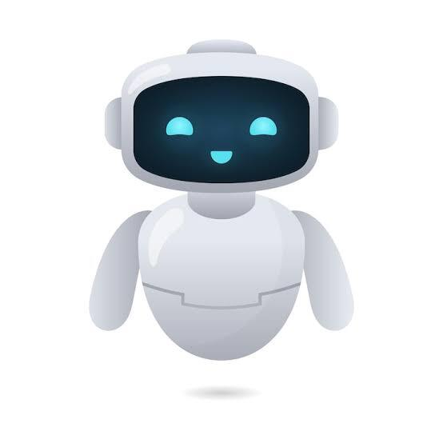

서비스 소개
어디에 물어야 할지 몰라 헤매지 않도록
신입생은 수강신청 기간, 서류 발급 방법, 시설 이용 시간처럼 사소하지만 급한 것을 자주 궁금해합니다. 공지사항은 여기저기 흩어져 있고 학과 사무실은 점심시간에 닫습니다. 물어봇은 학교 공지와 학사 규정을 대신 찾아 답해 주는 안내 챗봇입니다.

주요 기능
-
24시간 답변
사무실이 닫힌 새벽에도 바로 답을 받습니다.
-
학교 공지 기반
학사 공지와 규정에서 근거를 찾아 알려 줍니다.
-
평소 말투로 질문
정확한 검색어를 몰라도 말하듯 물어봅니다.
이용 방법
- 궁금한 점을 평소 말투 그대로 입력합니다.
- 물어봇이 관련 공지를 찾아 답변을 보여 줍니다.
- 더 확인할 내용은 담당 부서 연락처로 이어집니다.
사전 신청
3월 정식 공개 전에 먼저 사용해 볼 수 있습니다.